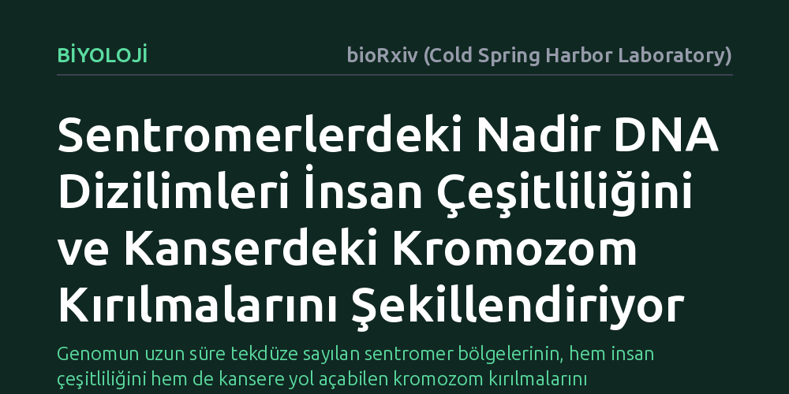

BIYOLOJI · bioRxiv (Cold Spring Harbor Laboratory) · 2026-10-15
Araştırmacılar, insan genomunun incelenmesi zor sentromer bölgelerinde nadir kısa DNA dizilerini inceleyerek gizli genetik çeşitliliği haritalandırdı. Tanımlanan bu sentromer soy gruplarının, hem insanın evrimsel geçmişiyle hem de kanserde görülen zararlı kromozom kırılmalarıyla bağlantılı olduğu saptandı.
Genomun uzun süre tekdüze sayılan sentromer bölgelerinin, hem insan çeşitliliğini hem de kansere yol açabilen kromozom kırılmalarını barındırdığını gösterir.

Hücre bölünmesinde kromozomların hatasız ayrılmasını sağlayan sentromerler, insan genomunun en hayati yapı taşlarından biridir. Ancak bu bölgeler son derece tekrarlı ve karmaşık dizilimlerden oluştuğu için, standart DNA dizileme teknolojileriyle okunması uzun yıllar boyunca neredeyse imkânsız kabul edilmiştir. Bu teknik engeller nedeniyle bilim insanları, sentromerleri genetik çeşitliliğin bulunmadığı tekdüze bölgeler olarak görme eğilimindeydi.
Ortadaki asıl soru, sentromerlerin gerçekten durağan olup olmadığı, yoksa içlerinde henüz keşfedilmemiş zengin bir çeşitlilik barındırıp barındırmadığıydı. Eğer bu bölgelerde bireyler veya popülasyonlar arasında belirgin genetik farklılıklar varsa, bu durumun insan evrimindeki izleri ve kromozomların kararsızlaşıp koptuğu kanser gibi hastalıklar üzerindeki etkilerini anlamak büyük önem taşıyordu.
Araştırmacılar, sentromerlerin karmaşık ve tekrarlayan yapısını çözebilmek için geleneksel hizalama teknikleri yerine kısa DNA parçacıklarının sıklığını ölçen hesaplamalı varyasyon analizine başvurdu. Genomda çok az rastlanan ve belirli varyasyonları işaret eden bu nadir dizilimler taranarak, sentromerlerin özgün parmak izleri çıkarıldı.
Elde edilen bu nadir dizilim varyasyonları sınıflandırılarak sentromerlere özgü soy grupları, yani ortak bir atadan miras kalan genetik bloklar tanımlandı. Böylece araştırmacılar, tekrarlarla dolu sentromer bölgelerini tek tek haritalandırmaya gerek kalmadan, bireyler arasındaki yapısal varyasyonları hesaplamalı biyoloji araçlarıyla ayrıştırmayı başardı.
Yapılan analizler, insan sentromerlerinin sanılanın aksine muazzam bir gizli genetik çeşitlilik içerdiğini gösterdi. Tanımlanan sentromer soy grupları, farklı insan popülasyonlarının evrimsel kökenlerini ve göç rotalarını takip etmeyi sağlayacak düzeyde belirgin bir ayrım sundu.
Daha da önemlisi, belirli sentromer yapılarının genomik kararsızlıkla doğrudan ilişkili olduğu belirlendi. Özellikle kanser hücrelerinde görülen ve kromozom kollarının kopup birbiriyle birleşmesiyle sonuçlanan kromozom yer değiştirmelerinin, belli sentromer gruplarında çok daha sık meydana geldiği ortaya çıktı.
Bu bulgular, insan genetiğinin uzun süre göz ardı edilen bölgelerinin biyolojik süreçlerde ne kadar aktif bir rol oynadığını ortaya koymaktadır. Sentromer yapısındaki farklılıklar, bir yandan modern insanın evrimsel geçmişine dair yeni pencereler açarken, diğer yandan hücresel düzeydeki kırılganlıkların anlaşılmasına olanak tanımaktadır.
Sonuç olarak, sentromer soy gruplarının haritalanması, kansere yatkınlık yaratan yapısal kararsızlıkların erken anlaşılmasında ve kişiselleştirilmiş genom analizlerinde yeni bir biyobelirteç katmanı sağlayabilir. Genomun bu gizli kalmış bölgelerinin aydınlatılması, hem genetik mirasımızı hem de hastalıklara yatkınlığımızı yeniden değerlendirmemizi gerektirmektedir.